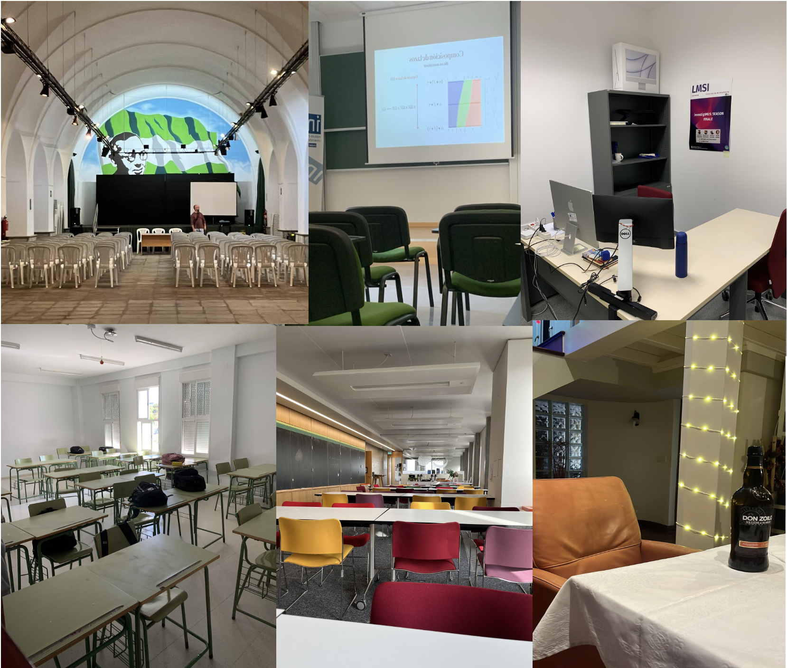

Sillas vacías
“El recuerdo es la presencia invisible”.Victor Hugo.
Recuerdo y olvido son antónimos.
Esto quiere decir algo así como que el olvido es la ausencia del recuerdo, que recordar es la negativa a olvidar. Sin embargo, al contrario que otros muchos antónimos, recordar y olvidar tienen una característica aun más singular. Tu recuerdo y tu olvido no pueden convivir en la misma línea temporal, se olvida hasta que algo hace recordar, y viceversa. El detonante de un recuerdo, la interrupción del olvido, puede ser provocada por cualquier cosa. Desde un olor, un lugar, una palabra,… hasta algo tan inocuo como una simple silla vacía.
Una silla que alguien ocupó en su día, que tuvo nombre y apellidos, un rostro.
Una silla que ahora quedó libre.
Una silla que ahora rompe tu forzado olvido y juega con tu recuerdo.
Una silla en la que ahora no te quieres sentar.
Una silla en la que ahora evitas a los que se quieren sentar, que se produzca el relevo que te haga olvidar.
Siempre pensé que una silla vacía solo servía para sentarse y poco más. De hecho, pocas habrán sido las veces que presté atención a sillas que vacías parecían estar. Ahora, siempre que veo una silla vacía, me repito, ¿a quién habrán olvidado ya?
Deseo que todos tengáis una buena entrada de año y que las sillas que han quedado vacías vuelvan a aparecer ocupadas en el año que está a punto de entrar.
“Todo tiene su tiempo, y todo lo que se quiere debajo del cielo tiene su hora. Tiempo de nacer, y tiempo de morir; tiempo de plantar, y tiempo de recoger lo plantado.”Eclesiastés 3:1-2
Atentamente,
Alberto Torrejón Valenzuela

>> Home